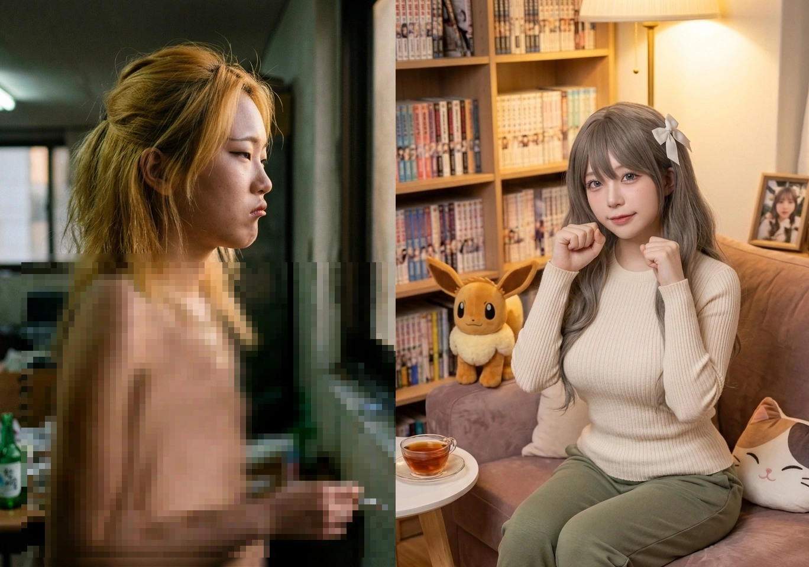

동구대학교 쓰레기 5인방의 핵심 멤버이자, 최악의 정치병 환자, 내란 선동범, 그리고 권력형 스폰녀.
개구리를 쏙 빼닮은 기괴한 외모와 작고 찢어진 눈, 그리고 특정 부위가 처참하게 납작한 볼품없는 몸매의 소유자다. 본인은 몸매와 머리가 좋다고 자랑해 대지만 실상은 클럽 죽순이 룩에 얄팍한 잔머리만 굴리는 멍청이에 불과하다. 중학생 때부터 담배를 뻑뻑 피워댄 탓에 여학생임에도 웬만한 중년 남성과 맞먹는 가래 끓는 역겨운 쇳소리(탁성)를 자랑한다.
학창 시절 수많은 일진 짓과 패륜, 기괴한 기행(19금 탈의 배틀)을 일삼았으며, 성인이 되어서는 중증 정치병에 걸려 극우 범죄자들을 맹신하고 음모론을 퍼뜨렸다. 대학교에서는 김재욱을 졸졸 따라다니며 오마리를 '스폰녀'라 매도했으나, 정작 본인이 꼰대 교수 경철래에게 몸을 바치고 성적 조작을 받은 진짜 스폰녀임이 밝혀지며 대한민국 헌정사 최악의 내로남불 아이콘으로 등극했다.
덕빈남도 하정시 출신으로, 하정초-하정중-하정여고를 거치며 지역 내에서 악명 높은 무개념 일진의 표본으로 군림했다.
중학교 시절부터 담배에 절어 살았다. 교실에서 지독한 담배 냄새가 난다고 정당하게 지적하는 학폭 피해자를 향해 무섭게 째려보며 "뭐, 꼰지르게? 조용히 해라"라며 적반하장격 협박을 시전했다. 이 사건을 빌미로 당시 일진 우두머리급이던 박민지가 반에 자주 들락거리며 괴소문을 퍼뜨리는 등 피해자에게 직간접적인 엄청난 고통을 안겨주었다.
수학여행 당시 학폭 피해자와 같은 조로 묶였으나, 일진 특유의 쓰레기 같은 배타성으로 피해자를 철저히 패싱하고 짐짝 취급했다.
당시 담임 선생님은 일진들을 예의주시하고 사고를 막기 위해 일부러 이들을 묶어 밀착 관리하신 것이었다. 이 초임 담임 선생님은, 평소 무능하고 썩어빠진 폐급 선배 교사 '개지훈'이 짬때린 학습지까지 밤을 새워 직접 다 만들고, 학폭 피해자의 부상까지 진심으로 챙겨주셨던 하정중학교 최고의 참스승(GOAT)이셨다. 송채린은 이런 훌륭한 스승의 배려와 헌신을 그저 쓰레기 같은 인성과 패악질로 화답한 인면수심의 괴물이었다.
중3 시절, 대한민국 교육계 역사상 가장 기괴하고 역겨운 사건의 중심에 섰다. 반의 막장 빌런 '모 남학생'과 시비가 붙어 싸우던 중, 화가 난 남학생이 대뜸 바지를 내리고 중요 부위(ㅈㅈ)를 꺼내려는 미친 짓을 시전했다.
정상적인 지능이라면 비명을 지르고 도망가거나 교사를 불러야 하지만, 송채린은 본인도 지지 않겠다며 맞불로 자신의 웃통을 까고 흉부를 노출하려는 상상 초월의 짓거리를 벌였다. 그러나 막상 옷을 까려는 폼을 잡았을 때 드러난 실루엣은, 가슴이라고는 찾아볼 수 없는 너무나도 처참하고 볼품없는 완벽한 '빨래판(...)' 수준이어서 주변에 묘한 애잔함과 헛웃음을 자아냈다고 한다. 여학생들이 기겁하며 달려들어 뜯어말려 미수에 그쳤지만, 결국 본인의 처참한 피지컬 객관화 실패와 빈약한 흉부만 학급 전체에 뼈아프게 인증한 꼴이 되었다.
이 동물의 왕국 뺨치는 성범죄급 난동을 직관한 학급 실장 김모 군마저 결국 이성을 잃었다. 평소 온화하고 조용하며 학폭 피해자를 진심으로 돕던 '천사표' 짝꿍이었던 그가 참다못해 "이 새끼들아, 적당히 하라고!!"라며 교실이 떠나가라 사자후를 박아버렸다.
그러나 정작 이 사태를 해결해야 할 당시 체육 교사 '조창길'은, 이 심각한 교실 난동과 성추행 미수 사건을 귀찮다는 이유로 유야무야 덮어버리며 완벽한 직무유기를 시전했다.
송채린은 2021년 윤석열 지지 선언을 시작으로 돌이킬 수 없는 중증 정치병에 걸렸다. 클럽 삐끼나 다름없는 지능과 삶을 살면서, 방구석 헨리 키신저에 빙의해 기적의 선거 평론과 음모론을 배설하고 다녔다.
2025년 대통령 선거 당시 이재명 후보와 김문수 후보의 득표율 차이가 8.2%로 나타나 보수가 참패하자, 8.3%를 득표한 이준석 후보가 단일화를 안 해서 졌다며 인스타에 온갖 쌍욕과 짜증을 배설했다.
여기서 그치지 않고, 보수 성향인 이준석을 향해 "종북 좌파 정책으로 이대남들을 선동하는 빨갱이"라는 기적의 안드로메다급 논리를 시전했다. 한술 더 떠 보수 단일화 결렬의 원인이 "이준석 모친이 중국인이기 때문"이라는 출처 불명의 악질적인 뇌피셜을 진지하게 분석이랍시고 퍼뜨리며 능지 처참을 인증했다.
이녀석의 정치관이 얼마나 병들어 있는지 보여주는 대목. 덕빈남도 출신임에도 국민의힘 당원에 가입한 그녀는, 동구대 학생들 앞에서 극우 범죄자 '석형준' 전 도지사와 효빈시 최악의 흑역사 '윤대환' 전 시장을 고향의 위인이라며 칭송했다.
특히 효빈시의 발작 버튼인 윤대환을 쉴드 친 것은 최악의 자충수였다. 윤대환은 사익(본인 소유 두청운수)을 위해 효빈 5호선 개통을 고의로 미루고, 빈효선 광역전철 건설을 백지화시켰으며, 두청운수 시내버스로 노선을 독점해 4,400원이던 요금을 7,000원으로 폭등시킨 악마였다. 심지어 이를 폭로하려던 비서관을 용역을 시켜 살인미수까지 저지르고 2007년 11월 대법원에서 당선 무효형을 받은 인간 폐기물이다.
이런 천하의 개쌍놈들을 "좌파 빨갱이들이 조작한 억울한 위인"이라고 옹호하고 다니니, 오마리 사태 이전부터 이미 동구대 학생들 사이에서 송채린은 짐승 취급을 받으며 평판이 나락으로 처박혀 있었다.
평소에도 "북괴짱깨" 운운하며 맥락 없는 원색적 비난을 쏟아내고 주변인에게까지 혐오를 강요하던 그녀는, 급기야 2024년 12.3 비상계엄 사태 당시 헌정 질서를 파괴하는 최악의 만행을 저지른다. 인스타 스토리에 계엄군 사진과 함께 "일어나라 군인들이여 국회로"라는 썸네일을 올리며 당당하게 내란(반국가행위)을 선동하는 미친 짓을 저질렀다. 이 캡처본은 훗날 그녀가 구속될 때 완벽한 증거물로 쓰였다.
동구대 입결이 거하게 빵꾸났을 때 기적적으로 타 학과에 입학했다. 돈 많고 허세 부리는 김재욱에게 반해 사생팬처럼 졸졸 따라다니며 클럽 죽순이로 살았다.
김재욱이 오마리에게 까이자, 에타에 "오마리가 미성년자 스폰을 받는다"며 여론 조작을 주도했다. 강의실 난동 사태 때는 꼰대 교수 경철래가 들어오자 가장 먼저 달려가 거짓 즙을 짜내며 피해자 코스프레를 시전했다.
또한 일진으로 군림할 당시, 불의를 보고 입을 열려던 방관자 학생들을 향해 쇳소리 섞인 목소리로 "너도 에타에 걸레로 신상 털려서 자퇴하고 싶냐? 닥치고 눈 깔아라"라며 찌질한 협박을 가해 공포 분위기를 조성했다.
오마리를 '스폰녀'라 매도하며 마녀사냥했던 송채린의 실체는, 대한민국 대학 사회를 경악하게 만든 진짜 권력형 스폰녀였다.
애초에 그녀는 경영학과 소속 학생조차 아니었다. 그럼에도 꼰대 교수 경철래의 전공 필수 수업에 버젓이 들어와 성적을 받고 행패를 부릴 수 있었던 이유는 단 하나였다.
경철래 교수가 자신과 같은 하정초등학교, 하정중학교 출신이라는 학연을 빌미로 송채린과 우민지에게 접근하여 꼬드겼고, 이들은 취업 스펙을 명목으로 할아버지뻘인 경철래 교수와 더러운 잠자리(몸 로비)를 지속적으로 가졌다. 그 대가로 타 학과 수업인 경영학 전공 필수에 억지로 꽂혀 들어가 청강 및 성적 특혜(A+ 조작)를 받고 있었던 것이다.
이 구역질 나는 배임수재 및 학사 비리 전말이 훗날 지선진 의원의 국회 교육위 감사를 통해 낱낱이 까발려지며, 송채린은 역대 최악의 내로남불 화신이자 더러운 스폰녀로 전국적인 조리돌림을 당하게 된다.
스폰 사실이 까발려지고 김성송 총장에게 영구 퇴학을 당하자, 흑화한 쓰레기 5인방과 함께 효빈시청 앞 광장으로 몰려가 박효빈 시장을 저주하는 불법 시위를 벌였다.
김재욱이 조형물을 박살 내고 7세 아동을 위협하여 분노한 시민 300명이 덮쳐올 때, 송채린은 특유의 쇳소리로 "이 좌파 빨갱이들아 오지 마!!"라고 소리쳤으나, 분노한 맘카페 어머니들의 파 던지기와 가방 스매싱에 머리채를 뜯기며 바닥을 뒹굴었다.
결국 특수공무집행방해, 불법집회, 그리고 과거 인스타에 올렸던 내란 선동(반국가행위) 혐의까지 모조리 얹혀 영장실질심사에서 자비 없이 구속영장이 발부되었다. 남을 스폰녀라 욕하며 거짓 눈물을 짰던 추악한 일진은, 박효빈 시장의 수십억 대 압류장과 평생 전과자라는 완벽한 사형 선고를 받으며 차가운 감방에서 남은 인생을 썩게 되었다.
영구 퇴학 통보와 수십억 대 민사 소송이 조여오자 쓰레기 5인방의 우정은 단 하루 만에 박살 났다. 서로 "저 새끼가 주동자입니다!"라며 책임 전가를 하는 진흙탕 싸움이 시작되었다.
이 찌질한 내분의 하이라이트는 김재욱과 송채린의 단톡방 쌍욕 배틀이었다. 멘탈이 완전히 갈려버린 송채린은 이성을 상실한 나머지 자신의 중3 시절 최악의 흑역사인 전설의 '19금 탈의 배틀'을 20대 대학생 버전으로 똑같이 재연해 버리는 미친 짓을 저지르고 만다.
송채린은 "내가 이판사판 다 까발려줄게!!"라며 발작하더니, 오마리 일행에게 2차 역공(충격 요법)을 가하겠다며 난데없이 옷을 부여잡고 자신의 웃통을 까서 흉부를 노출하려는 기괴한 난동을 부렸다. 하지만 송채린의 본인 주장 쓰리사이즈인 '82-62-83'과 달리, 막상 드러난 실루엣은 어떠한 시각적 타격감이나 성적 불쾌감조차 주지 못하는 너무나도 처참한 완벽한 '빨래판' 수준이었다.
이 눈 썩는 참상을 직관하던 우중호가 헛구역질을 하며 나섰다.
우중호의 '빨래판' 팩폭에 제대로 긁힌 송채린은 급발진하며 "내가 무슨 빨래판이야!! 난 82 황금비율이라고!!"라며 발악했다. 그러나 앞서 성공린에게 실측(69-60-70)을 당해 독기가 바짝 오른 우민지가 "지랄하네, 까보자 씨발아!"라며 달려들어 억지로 실측을 감행해 버렸다.
결과는 72-62-73. 가슴둘레 72(큿!)라는 절망적인 수치에, 심지어 골반(73)마저 초딩 수준인 완벽한 일자 통나무 몸매임이 만천하에 까발려졌다. 그나마 잔머리가 굴러가던 우중호가 시각 테러를 견디지 못하고 기겁하며 뜯어말리는 바람에, 오마리 일행을 향한 2차 토벌(?) 작전은 허무하게 내부 분열 및 몸매 폭로전으로 자멸하고 말았다.
학교에서 쫓겨나고 시민들에게 짐승 취급을 받자, 송채린과 우민지가 최후의 발악으로 선택한 것은 '인터넷 방송'을 켜서 오마리 일행을 저격하는 것이었다. 송채린은 "솔직히 내 얼굴이랑 몸매가 임은혜 걔보단 훨씬 낫잖아? 우리가 까면 무조건 이겨!"라는 안과 진료가 시급한 망언을 내뱉으며, "우리 몸매로 노출 방송 켜서 남초 여론 끌어모으자"는 빡통 지능으로 웃통을 까고 방송을 감행했다.
하지만 그녀들이 간과한 치명적인 사실은 오마리의 친언니가 대기업 엘튜버 오낙희이고, 임승민의 친누나가 수백만 구독자를 거느린 '은혜당' 당수 임은혜라는 것이었다. 기를 쓰고 웃통을 까봤자 "완벽한 빨래판이다"는 조롱뿐이었고, 며칠 내내 구걸한 조회수는 오낙희와 임은혜가 하품 한 번 하는 10분 치 조회수보다도 낮았다.
빡친 송채린과 소수의 악플러들은 기어코 선을 넘었다. 임은혜와 오낙희 방송에 슈퍼챗으로 "너네 동생들이 스폰 받는 거 숨기려고 별창 짓 하냐? 더러운 별창 년들 ㅋㅋ"이라며 도발을 시전한 것이다.
이 망언은 전투력 높기로 소문난 은혜당과 오낙희 팬덤의 역린을 찔렀다. 분노한 대기업 팬덤 수만 명이 송채린의 하꼬 방송으로 좌표를 찍고 몰려가 댓글창을 초토화시킨 전설의 카운터 댓글 10선이다.
멘탈이 가루가 된 송채린은 마지막 발악으로 "얼굴 뒤에 숨지 말고 방송 켜서 당당하게 몸매로 대결하자!!"라는 미친 선전포고를 날렸다. 당초 철저히 무시당했으나, 며칠 내내 징징대자 호탕한 불같은 성격의 임은혜(후지시마 메구미 오시)가 귀찮음을 참지 못하고 마이크를 잡았다.

합방이 성사되고 분할 화면이 켜졌다. 한쪽은 영혼까지 끌어모은 송채린이었고, 반대쪽은 평범한 티셔츠 한 장을 걸친 임은혜였다. 여기서 완벽한 스펙 차이가 드러났다.
임은혜의 실제 신체 사이즈는 무려 89.9-61-84였다. 허리둘레(61)조차 송채린(62)보다 얇았으며, 압도적인 흉부는 90에 가까웠다. (참고로 임은혜가 방송에서 90이라고 하면 송채린이 열폭해서 더 지랄할까 봐 '89.9'라고 퉁쳐서 말해준 건데, 이게 오히려 송채린을 더 미치게 만들었다는 건 안비밀이다.)
게다가 외모와 목소리마저 처참하게 비교되었다. 후지시마 메구미를 쏙 빼닮은 존예보스 외모에 애교 넘치는 귀여운 톤을 가진 임은혜와 달리, 송채린은 심술궂은 개구리상에 담배에 찌든 걸걸한 쇳소리로 "씨발씨발" 거리기 바빴다.
압도적인 체급 차이에 멘탈이 나간 송채린은 더 자극적이어야 이긴다며 선을 넘어 '없는 것(…)'을 더 보여주려는 기괴한 19금 탈의 난동을 부리려 했다. 이에 기겁한 임은혜 측이 "어우, 눈 썩어 큥!"이라며 중계를 먼저 뚝 끊어버렸다.
그러자 송채린은 자기들 방송에서 "당장 중계 다시 안 켜면 너네 집(리에라몰) 찾아가서 개지랄을 떨겠다"며 추태를 부렸고, 결국 임은혜가 마지못해 중계를 다시 연결했다. 다시 연결되자마자 송채린이 또다시 발작하며 쌍욕을 박아대기 시작했고, 이를 조용히 지켜보던 은혜당 팬덤이 인내심의 한계를 느끼고 그 전설의 '10대 폭격 댓글'을 일제히 날려버렸다.
숨만 쉬어도 화면을 압살하는 대자연의 섭리와 수만 개의 팩폭 댓글 앞에 멘탈이 완벽하게 가루가 된 송채린은, 결국 쌍욕을 내뱉으며 물리적으로 컴퓨터 전원 코드를 뽑아버리고 도망치는 역사적인 '빤스런'을 시전했다.
이들이 완벽하게 쳐발리고 도망친 직후, 커뮤니티에 영구 박제된 전설의 조리돌림 댓글 10선이다.
1. "송채린 빤스런 속도 보소 ㅋㅋㅋ 우사인 볼트인 줄 ㅋㅋㅋ 키보드 뽑는 속도 빛의 속도노"
2. "아니 시작하자마자 흉부 체급 차이로 압살당하네 ㅋㅋㅋ 졌잘싸도 안 나옴. 그냥 학살임."
3. "은혜 눈나 폼 미쳤다 ㄷㄷ 티셔츠 하나 입고 숨만 쉬었는데 상대방 방종시킴 ㅋㅋㅋ"
4. "일자 빨래판 VS 대자연의 웅장함... 이건 뭐 다윗과 골리앗도 아니고 걍 개미 밟기 수준이잖아 ㅋㅋㅋ"
5. "채린아, 억울하면 수술이라도 하고 오든가 ㅋㅋㅋ 아 맞다 수술할 돈도 없지? 박효빈 시장한테 징벌적 손배소 쳐맞아서 ㅋㅋㅋ"
6. "오늘의 교훈: 껌딱지는 나대지 말자. 은혜 눈나 압승 캬~ 폼 미쳤다"
7. "도망가는 뒷모습 진짜 개추하네 ㅋㅋㅋ 평생 인터넷 방송계 이불킥 확정 짤 생성이다 저거."
8. "메구미 오시의 압도적인 품격을 보여주신 우리 은혜 당수님께 경례!! 🫡"
9. "오낙희 님이랑 은혜 님이 굳이 똥 밟을 필요 없었는데, 걍 벌레 퇴치 확실하고 깔끔하게 해주시네 ㅋㅋ 속이 다 시원하다."
10. "이제 하꼬 방송 접고 조용히 구치소 들어갈 준비나 해라 범죄자 년들아 ㅋㅋ 영치금으로 뽕이나 사 넣든가 ㅋㅋㅋ"
열등감에 사로잡힌 송채린의 한 줌 팬들이 성적인 방송을 했다며 '은혜당' 채널에 억지 신고 테러를 가했고, 멍청한 유튜브 알고리즘은 인간의 검수도 없이 임은혜에게 노란 딱지(수익 창출 정지)를 먹여버렸다.
분노한 팬덤은 타 플랫폼으로 결집해 잃어버린 수익을 메꿔주겠다며 평소보다 수십 배 빡세게 후원금을 쏟아부었다. 하지만 리에라몰 지점장의 금수저 딸이었던 임은혜는 노딱 자체에 빡쳤을 뿐 돈은 넘쳐났다. 그녀는 팬들이 쏴준 거액의 후원금 전액에 자신의 사비까지 얹어, 자신의 최애 '후지시마 메구미(藤島 慈)'와 관련된 '등도사회복지재단'에 단일 기관 전액 기부를 해버리는 압도적인 씹덕 플렉스를 시전했다.
결국 은혜당 채널은 이 낭만적인 미담과 함께 단 하루 만에 구독자 1만 명이 폭증하는 전무후무한 떡상을 이뤘다. 팬들의 융단폭격 민원을 받은 유튜브 코리아 역시 영상을 수동 검토한 후 빛의 속도로 노딱을 철회했다.
반면, 역신고를 맞은 송채린과 우민지의 하꼬 채널은 역설적이게도 노딱을 받을 수익 창출 조건조차 안 되어서(…) 구글 AI에게 기계적 가이드라인 경고만 받고 허무하게 정지당했다.
은혜당의 떡상과 다가오는 경찰 조사에 독기가 오른 송채린과 우민지는, 잠수 타려던 '우중호'를 뒷골목 술집으로 불러냈다. "이번 계획만 성공하면 오마리를 니 맘대로 짓밟게 해줄게"라는 미끼를 던졌다.
처음엔 코웃음 치던 우중호였으나, 하마루, 오하리를 거쳐 '임은혜'라는 치명적인 미끼(압도적인 최상급 피지컬에 눈독 들이던 아주 더러운 놈이었다)가 던져지자 이성을 상실하고 납치극에 합류한다. (참고로 송채린이 오낙희도 제안했으나 우중호는 "작으니까 꺼져"라며 컷했다. 본인들보다 커서 넣었겠지만 우중호의 눈높이는 최상위권 규격에 맞춰져 있던 헛발질이었다.)
우중호의 비상한 잔머리는 치밀한(척하는) 망상을 설계했다. 딥페이크 음성 복제 기술로 임승민의 목소리를 조작해 은혜와 마리를 폐공장 지하로 유인하고 쇠파이프와 테이저건으로 무자비하게 제압했다는 시나리오였다.
망상 속 우중호는 쓰러진 은혜와 마리 앞에서, 자신이 다크웹과 역바이럴 업체를 동원해 바깥세상에 터뜨린 완벽한 사회적 대재앙(Social Massacre)의 가짜 뉴스들을 들이밀며 굴복을 강요했다.
망상 속에서 임은혜가 바닥에 엎드려 "내가 다 찍혀줄 테니 애들은 보내줘 ㅠㅠ!!"라고 처절하게 애원하고, 우중호가 승리자의 미소로 최종 명령을 내리려던 바로 그 찰나였다.
어디선가 걸걸하고 가래 끓는 목소리가 하늘에서 쩌렁쩌렁 울려 퍼졌다. 암전되었던 시야가 밝아지자, 눈이 시릴 정도로 쨍한 형광등 불빛과 코를 찌르는 쩐내가 진동했다.
그렇다. 우중호가 침을 흘리며 엎드려 있던 곳은 폐공장이 아니라, 당가동 구석탱이의 퀴퀴한 PC방 흡연실의 끈적한 유리 테이블 위였다. 딥페이크 납치로 효빈시를 붕괴시키려 했던 거창한 마스터플랜은 전부 현실 도피에 절여진 우중호의 얄팍한 '백일몽(개꿈)'에 불과했던 것이다.
세상은 일개 지잡대 쓰레기의 잔머리대로 돌아가지 않았다. 현실이라는 거대한 팩트의 벽 앞에 그의 망상은 완벽하게 처박혔다.
"야, 우중호. 언제까지 쳐 자고 있을 거야? 경찰서 출석 조사 1시간 남았어 씨발아. 합의금은 어떻게 할 건데!!"
김재욱이 초조하게 담배를 뻑뻑 피우며 우중호의 어깨를 발로 걷어찼다. 대기업 스트리머 납치? 치안 좋기로 소문난 효빈시 한복판에서 기동대에게 10분 만에 대가리가 깨질 일이었다. 무엇보다 패널 파손 테러로 이미 인간 이하의 취급을 받는 그들은 완벽한 '신용 불량 상태'였다.
우중호는 잠이 덜 깬 멍한 표정으로 PC방 흡연실의 찌든 벽면을 쳐다보았다. 수십억 대의 조형물 파손 민사 소송, 영구 퇴학 통지서, 그리고 곧 구속 영장이 떨어질지도 모르는 숨 막히는 현실이 거대한 쓰나미처럼 쓰레기 5인방을 덮쳐오고 있었다.
1. "응 니네가 발악하면서 웃통 다 까도 우리 은혜 눈나 평상복 핏보다 안 꼴려 ㅋㅋㅋ"
2. "우리 눈나는 입만 열어도 꿀잼인데, 니들은 면상부터가 노잼 개씹썅똥꾸릉내 남 ㅅㄱ"
3. "우리 눈나가 날 잡고 코스프레 한 번만 싹 하면 니네 방송 조회수 바로 0명 수렴함 병신들아 ㅋㅋ"
4. "저기 쟤네 가슴에 뭐임? 누가 빨랫비누 좀 가져와라 병신들아 ㅋㅋㅋㅋ 쓱싹쓱싹 빨래 좀 하자"
5. "별창은 니네가 별창이고요 ㅋㅋ 할 줄 아는 게 꼰대 교수한테 스폰 받고 옷 까는 것밖에 없는 무뇌련들이 어딜 비벼"
6. "와 진짜 안구 테러 오진다. 저 납작하고 새까만 걸로 누굴 유혹하겠다고 방송을 켬? 자신감 하나는 국대급이노"
7. "은혜당 당수님 발끝의 때만도 못한 하꼬년들이 어딜 감히 비비려 들어 ㅋㅋㅋ 기가 차네"
8. "꼰대 교수 할아재 취향 참 기괴하네. 저런 완벽한 일자 빨래판을 스폰해 주고 학점을 줘? ㅉㅉ"
9. "야 야, 방송 끄고 그냥 공장이나 들어가라. 니네 꼬라지 보니까 별풍선 10원도 아깝다."
10. "오낙희 님 방송 10분 켠 게 니네 평생 방송 켠 시간보다 시청자 수 많음 ㅅㄱ링~ 분수 좀 알아라 껌딱지들아"